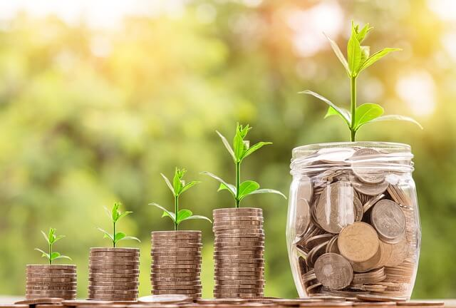

Guide de l'affiliation N26 en France : Comment Gagner jusqu'à 1500€
La banque allemande N26 propose régulièrement des offres de parrainage pour gagner de l'argent facilement en France. En souscrivant à cette banque gratuite, vous pourrez gagner 20€ par personne que vous parrainez, ce qui peut vous permettre de générer un revenu complémentaire non négligeable.
Comment puis-je gagner 20€ et jusqu'à 1500€ ?
Voici les étapes à suivre :
-
Avant tout, vous devrez vous inscrire obligatoirement en passant par ce lien. Une fois arrivé sur la page, cliquez sur "commencer", l'inscription se fera en seulement 8 minutes.
-
Une fois que vous avez finalisé l'inscription et reçu votre mastercard, l'astuce est de vous rendre sur le site N26 ou sur l'application pour découvrir votre code et/ou votre lien de parrainage. Il vous suffira ensuite de partager ce lien avec d'autres personnes de votre entourage et que ces personnes effectuent un achat qualifiant pour bénéficier de votre prime de parrainage.
À quoi correspond un achat qualifiant ?
Toute personne qui s'inscrit via votre lien devra effectuer un achat dont le montant devra au minimum correspondre au montant de la prime.
Par exemple, si votre prime est de 20€, votre filleul devra faire un achat d'un minimum de 20€.
Quel intérêt de parrainer alors ?
Car il s'agit d'un investissement qui peut vous rapporter jusqu'à 1500€ !
Qui peut s'inscrire et bénéficier de la prime de parrainage ?
Toute personne majeure (plus de 18 ans), résidant en France, peut bénéficier de cette opportunité.
Quel compte choisir pour avoir un compte gratuit ?
Prenez le compte N26 Standard à 0,00€ par mois.